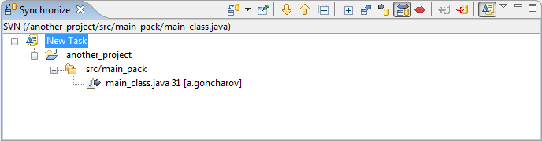
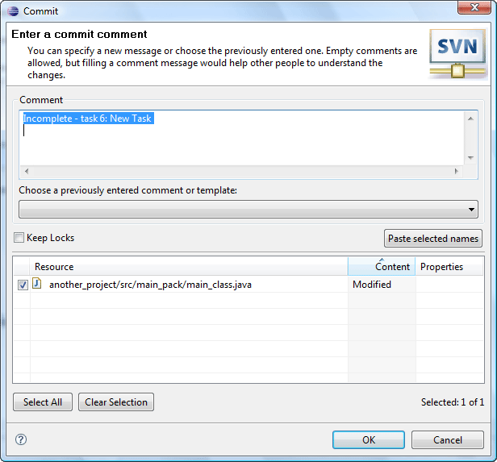

Mylyn integration
This topic provides an overview of integration with the Mylyn and demonstrates how both tools can be used together.
- In order to start the user should have Eclipse 3.4 or higher and Mylyn installed. During Subversive installation select 'Mylyn Integration' feature. Before installing the integration Subversive will check for a proper Mylyn version installed.
- Checkout or share a project with the Subversive. This step connects a project with the Subversive and as the result you can use Subversive features for it, including integration with the Mylyn.
- Create some task, e.g. New Task and save it. Then the user should activate the task.
- As soon as the task is activated make some changes in the source code.
-
Source code commits
Choose 'Team > Synchronize' for this project in order to activate Subversive 'Synchronize View'. In the 'Synchronize View' press the 'Show Change Sets' button. The changes which were made under the 'New task' are displayed in the corresponding change set. By this way you can see a code changes related with particular Mylyn task.

If the user wants to commit changes to the repository he should select 'Commit' item in the pop-up menu. In the Subversive 'Commit' dialog you will see Mylyn task status, name and URL as a proposed comment.

-
Task modification
Open the 'Task List View' related to Mylyn and choose 'Commit Context' menu item in the current task pop-up menu. As the result Subversive 'Commit' dialog is shown and you are able to commit all source code changes related with selected task